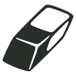

Many types of event can be edited without having to remove and replace them - long-press on the event, and a panel will appear, specific to the type of event.
Many types of event allow you to fine-tune the position of the event by using the drag button.
Pressing the removes all user-applied movement settings and returns it to its original position.
Several events feature text - with these you can change the text itself, the text size and the font. A-Score provides three text fonts, but you can import more of your own - see Importing.
Any event that is selected can be deleted by pressing on the  button.